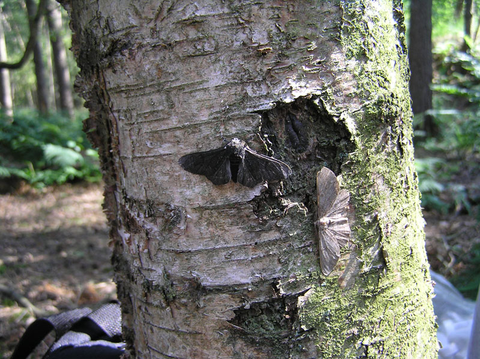
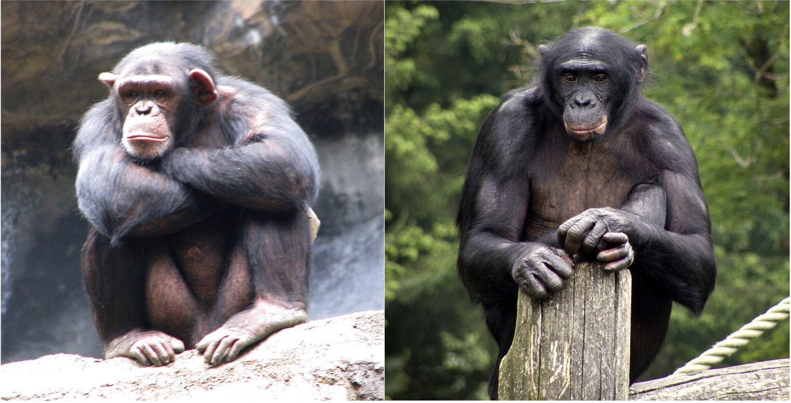
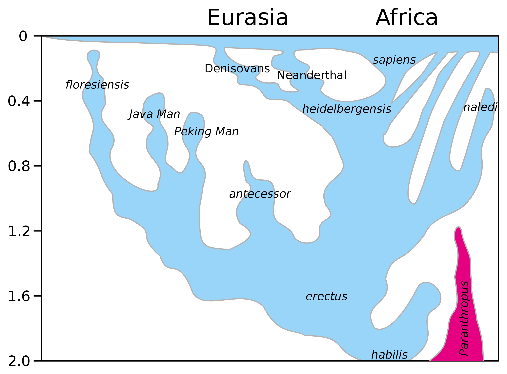

7. gaia · Giza izaera: eboluzioa eta hominizazioa
Gizona naiz, ez zait arrotz ezer gizatiarrik.
—Publio Terentzio Afrikarra, Heauton Timorumenos (163 o.a.a.) · Clauderen itzulpena, latinetik
«Homo sum; nihil humani a me alienum puto», esan zuen latindar komikoak. Eta nik, ordea, honela esango nuke: «Nullum hominem a me alienum puto». «Gizona naiz, ez deritzot arrotz beste ezein gizoni». Izan ere, humanus adjektiboa humanitas, gizateria, haren substantibo abstraktua bezain susmagarria dut. Ez gizatiarra ez gizateria, ez adjektibo sinplea ez adjektibo substantiboa, substantibo konkretua baizik: gizona.
—Miguel de Unamuno, Bizitzaren sentimendu tragikoaz · Kintanaren itzulpena (Klasikoak, 1994)
§24 · Gizakia, galdera filosofikoaren subjektua
Gizakiak bere existentziaz galdetu dio bere buruari, bere buruaren kontzientzia duenetik; hau da, gutxienez Homo sapiens-a sortu zenetik, duela 200 000 urte baino gehiago. Imajina ditzakegu lehen gizakiak, Afrika ekialdeko sabanan beren existentziaz harriturik: zertan ari gara hemen?, nor gara gu?, nor zara zu?, zer duzu buruan?, berdinak al gara?, maite al nauzu?, arriskutsua al zara?, zer egin behar dugu?, heriotzarekin amaitzen al da dena?
Gure giza kondizioak kontraesanezko alderdi asko ditu; batzuk zoragarriak dira, eta beste batzuk, beldurgarriak. Sinestezina da Albert Einstein, Antonio Vivaldi edo Nelson Mandela Iosif Stalin, Josef Mengele edo Pol Poten espezie berekoak izatea; edo gure berekoak izatea. Sorkuntza artistikorik gorenak, ekintza altruistarik mesedegarrienak eta gizateriaren aurkako krimenik lazgarrienak: dena pertsonek egina. Pertsonak, zugandik eta nigandik hain desberdinak ez direnak.
Gizakiok badugu gaitasuna geure miseria(k) eta geure bizi-baldintzen gogortasuna —gaixotasuna, sufrimendua eta heriotza— gainditzeko, eta mundu hobeak, zuzenagoak eta zoriontsuagoak imajinatzeko. Ikertzeko, geure buruari galdetzeko eta sortzeko bulkada dugu. Elkarlanean aritzeko, elkartzeko eta maitatzeko gai gara. Halaber, bekaizkeria, gorrotoa eta herra sentitzen ditugu; gezurra esaten dugu, lapurtu egiten dugu eta hil egiten dugu.
Gizaki izatearen esperientzia liluragarria da, ezta? Nortasunen, jokabideen eta ideien aniztasuna besarkaezina da; aurki gaitezkeen egoera desberdinen kopurua, agortezina. Existentziaren dramak berdin astintzen gaitu denok; horregatik baiezta dezakegu, Terentziorekin batera, «ez zait arrotz ezer gizatiarrik», hain zuzen ere gizakiak garelako.
Gogoeta filosofikoa, ez gutxitan, gure kontzientziaren barrenean hasten da, gehienetan errealitateak marruskaduraren bat aurkezten digunean, gure bizitzen jario lasaia eteten duen arazo bat: zergatik sentitzen dut gustatzen ez zaidan hau?, zergatik dut nik zailtasun hau, beste hark, itxuraz, ez badu? Hala ere, ez da esperientzia handirik pilatu behar konturatzeko pertsona guztiok partekatzen dugula gizaki izatea, eta garenaren zatirik handiena —geure buruak zeinahi desberdin eta bakar irudituta ere— gure espeziekideekin partekatzen dugula.
Introspekzioaren bidez geure baitan sakontzen dugu, eta horrela geure burua ezagutzen dugu, eta berezagutzen. Gainera, bestea aurkitzen dugu, besteak, geure sakontasunean bertan: ulertzen dugu besteak gabe ez ginatekeela existituko —pentsa ezazu zure gurasoengan eta zure janaria erein zutenengan—, ez ginatekeela garen bezalakoak izango, eta ezingo ginatekeela gizabanako gisa garatu eta loratu. Nahiz eta, kronologikoki, besteen existentziaz lehenago ohartzen garen: haurtxo batek ez daki existitzen denik, eta bere amaren existentziaz —bere borondatetik aparteko eragile gisa— bereaz baino lehen ohartzen da. Garela ohartzen gara, besteak ez garela kontzientzia hartzetik hasita.
Horrela aurkitu(ko) dugu, gizaki izatearen drama ez ezik, inguruan ditugunekin dugun lotura sakona ere: elkarren mendekotasunezko lotura, bai, baina baita aitortzazkoa eta estimuzkoa ere. Aurkitzen dugu, hitz batean, gure gizatasun komuna. Eta ez pentsa ideia hori hain intuitiboa denik: «gizaki guztien multzoa» kontzeptua oso berria da, eta gaur egun ere ez ditu pertsona guztiak interpelatzen.
Gai honetan gizaki izatea zertan datzan aztertuko dugu: nondik gatozen, nolakoak garen eta zergatik garen horrelakoak1.
§25 · Hautespen naturalaren bidezko eboluzioa
Begiratu inguruan. Gure planeta biziz beteta dago. Zoragarria da mendira igotzea edo basoan barrena ibiltzea: han, izaki bizidun ugariz inguratuta aurkituko duzu zeure burua, zeruan, lurrean eta lurpean. Begien ordez mikroskopio bat bazenu, guztiz bestelako mundu batera iritsiko zinateke: bakterioak ikusiko zenituzke, milaka milioika, lur-zatirik txikienean ere.
Bizia nonahi dago, baita zure hiriko kaleetan ere. Asfaltoak eta zementuak bizigabeak dirudite —eta hala dira—, baina era guztietako izaki bizidunak dauzkate. Eta zeure gorputz barrura begiratu ahal bazenu, ikusiko zenuke gizaki bat baino gehiago dagoela zugan: dakigunez, gizaki bat zara, baina zure gorputzean gizakiarenak ez diren zelula gehiago daude gizakiarenak direnak baino2.
Charles Darwin (1809-1882) liluratuta zegoen honekin guztiarekin, halako moldez non galdera handi bat sortu baitzitzaion buruan: nola da posible bizi-aniztasun hau guztia?, nondik dator?, zergatik daude izaki bizidunen hainbeste espezie? Zorionez, zientzia-buru oso ahaltsua zuen, eta funtsezko galdera era egokian formulatzen jakin zuen. Konturatu zen, espezie arteko aldakortasun nabari bat egoteaz gain —espezieak desberdinak dira elkarren artean—, bazegoela baita ere espezie barneko aldakortasun handi bat: espezie bereko banakoak desberdinak dira elkarren artean. Horixe izan zuen abiapuntua, gizaki batek inoiz izan dituen ideiarik onenetako bat argitara ekartzeko.
Darwinen eta Alfred Russel Wallaceren (1823-1913)3 aurretik ere, jende askok galdetua zion bere buruari nondik zetorren espezieen halako aniztasuna. Haien garaian, biodibertsitatearen azalpenik ohikoena jatorri kristaukoa zen: Jainkoak dena ezerezetik sortu omen zuen duela milaka urte batzuk, eta bizia gaur ikusten ditugun espezie berberetan antolatu omen zuen. Espezieen aldaketa ez zegoen menuan; are gutxiago gu gizakiok duela milioika urte existitu ziren tximinoengandik etortzea4.
Hautespen naturalaren printzipioak. Darwinek jakin zuen bizi-forma horien aniztasunean erlazioren bat ikusten. Haren intuizioa izan zen banako bat den bezalakoa zergatik den —bere ezaugarri fisikoekin eta jokabide-ezaugarriekin— azaltzeko biderik onenak gurasoengandiko herentzian eta bizi zeneko ingurumenean egon behar zuela.
- Espezieak elkarren artean desberdintasun txikiak dituzten banakoz osatuta daude. Adibidez, Darwinek Galapago uharteetan aurkitu zituen hegaztien mokoak, edo tximeleten hegoetako orbanak.
- Espezieek kide kopuruan esponentzialki hazteko joera dute belaunaldiz belaunaldi. Pentsa ezazu untxien, arratoien edo bakterioen ugalketan; adibide horiek argiagoak izanagatik, ereduak espezie bizi guztiei eragiten die.
- Hazkunde horrek espezie bereko banakoen arteko biziraupenaren aldeko borroka eragiten du, hiru arrazoirengatik: beharrezko baliabideak urriak dira —edo, gutxienez, mugatuak—; gaixotasuna; eta harrapariak.
- Banakoen arteko aldakuntza txikiak alde handia dira batzuentzat borroka horretan: baliabideak abantailaz aprobetxatzeko, gaixotasuna gainditzeko edo harrapariei besteek baino hobeto itzuri egiteko bidea ematen diete.
- Banako horiek gehiago bizirauteko joera dute, eta ondorengo gehiago izatekoa.
- Ondorengoek gurasoen ezaugarriak heredatzeko joera dute.
- Aldakuntza erabilgarriek edo egokitzapenezkoek maizago transmititzeko joera dute, halakoak ez direnek baino. Horri hautespen naturala deitzen diogu.
- Denborak aurrera egin ahala, espezieak aldatu egiten dira.
- Nahikoa denbora igarota, arbasoek beren hain bestelako ondorengoak sortzen dituzte, non espezie desberdin bat eratzera iristen baitira. Prozesu hori etengabe gertatzen da: espezieak dibergiarazi egiten ditu, eta bitarteko estadioak desagerrarazi.

§26 · Zer aldatzen duen darwinismoak gizakiaz dugun ideian
Ez da harritzekoa Daniel Dennett filosofoak (1942-2024) esatea hautespen naturalaren bidezko eboluzioaren teoria dela «inork inoiz izan duen ideia bakar onena». Azaltzen dituen gauza garrantzitsuen kopuruagatik da, eta ondo azaltzen dituelako, aurreko azalpenetatik erabat bestelako eran; ez biologian bakarrik, baita geure burua gizaki gisa ulertzeko funtsezko auzietan ere.
Beste edozein bezalako izaki bizidunak gara. Darwinismoaren aurreko ikusmolde antropologikoek, eta bereziki kristautasunak, gizakia gainerako espezieetatik bereizitako zerbait zela zeritzoten, desberdina. Darwinek erakusten du animaliak, landareak eta gainerako izaki bizidunak eginda dauden materia beraz eginda gaudela. XX. mendean zehar egiaztatu genuen, genetikaren garapenarekin, ezagutzen dugun bizi guztia DNAn oinarritzen dela, eta DNA horren azterketak esaten digula zein antzekoak garen beste espezie batzuen aldean eta noiz banandu ginen haiengandik. Gizakien, txinpantzeen eta gorilen arteko itxura-antzekotasunak ez dira kasualitatea, ezta jainkozko apeta ere, milioika urteko hautespen naturalaren emaitza baizik.
Txinpantzearekin DNA-sekuentziaren % 99 inguru partekatzen dugu. Espezie urrunagoekin konparazioa ez da jada DNA osoaren gainean egiten, geneen gainean baizik, eta komeni da biak ez nahastea: proteinak kodetzen dituzten gure eskualdeen % 85 inguru —genomaren hogeirena baino ez dira— saguarenekin bat datoz, eta gure geneen % 60tik gertu baliokide ezagugarria dute ozpin-eulian, eta baita platanoan ere. Hamar genetik seik platanoan lehengusua izateak ez du esan nahi zure DNAren hamarrenetatik sei harekin partekatzen dituzunik: esan nahi du bizirik egotearen oinarrizko makineria behin bakarrik asmatu zela, platanorik eta gizakirik izan baino askoz lehenago. Horrek gure handiusteak perspektiban jarri beharko lituzke: geure buruak zeinahi berezi irudituta ere —eta izanda ere—, beste izaki bizidun bat gehiago izaten jarraitzen dugu, bizidun orori dagozkion baldintza fisiologiko berberen mende. Gure arrazoimenak gizarte guztiz konplexuak eta produktu teknologiko-kultural txundigarriak sortzeko aukera ematen digu, hala nola txertoak eta eleberriak; baina jaten eta lo egiten jarraitu behar dugu, eta oraindik ere gaixotu, sufritu eta hil egiten gara.

Eboluzioak printzipio soil bakan batzuen bidez jarduten du. Hautespen naturalaren bidezko eboluzioaren teoria azalpen zientifiko bat da, ebidentzia pilatu ugarikoa; kontrastagarria izatea da zientifiko egiten duena. Haren bikaintasunaren zati on bat soiltasunean datza: ez du jo behar existentzia frogatu beharko litzaiokeen Jainko batengana, ezta laborategi guztiz konplexuetara ere —nahiz eta horiei esker xehetasun harrigarriz ikasten dugun nola eragiten duen—. Printzipio hauen gainean5, Darwinek eta Wallacek azaldu ziguten beste espezie bizi bat gehiago garela:
- Zoria. Gure eboluzioa ez da teleologikoa: ez dago inork diseinaturiko helbururik. Ez dugu aldez aurretik finkatutako bide bat egiten; aitzitik, birkonbinazio genetikoaren zoriaren eta ingurumenarekiko elkarrekintzaren mende gaude.
- Herentzia. Jaiotzean garena gurasoek uzten diguten herentziaren adierazpena da; gure konfigurazio genetikoa gurasoen geneen konbinaziotik dator, eta haiek kopiatzean agertzen diren mutazio berrietatik. Mutazio horiek ia beti hutsalak dira, eta batzuetan kaltegarriak, baina benetan berria den aldakortasunaren iturri bakarra dira: haiek gabe, hautespen naturalak ez luke zeren artean hautatu.
- Ingurumena. Konfigurazio horrekin egiten diogu aurre munduari, eta bertan bizirauten saiatzen gara. Biziraupena kontaezin ahala faktoreren mende dago, baina, funtsean, inguruabar horiek ondoen egokitutakoak hautatzen dituzte, eta horiek gehiago ugaltzeko eta beren karga genetikoa ondorengoei uzteko joera izango dute.
Herentziaren, zoriaren, ingurumenaren eta denboraren emaitza gara, beraz.
Gure gaitasun apartak mirarik gabe azaltzen dira. Darwinismoak, Jainkoaren existentzia nahitaez eragozten ez badu ere, bai ezeztatu zuen gizaki nola bihurtu ginen azaltzen zuen ikuskera kristaua: Jainkoak unibertsoa sortu izan balu ere, ez gintuen kolpetik sortu, ezerezetik; beste espezie batzuetatik gatoz, hautespen naturalaren bidez. Ez du Jainkoa zeharo baztertzen, baina zokoratu egiten du, lehen baino fenomeno gutxiagoren azalpen posible gisa utzita.
Beharbada pentsatuko duzu Jainkoak gizakia zuzenean sortu izanaz eztabaidatzeak ez duela lekurik XXI. mendean. Hala ere, oraindik ere hor diraute kreazionismoak eta diseinu inteligentearen defendatzaileek; argudio sasizientifiko horren arabera, gure adimena hain da egitate konplexua, non Darwinen azalpena ez baita aski. Teoriaren froga enpirikoen kopurua dela eta, eta behatu bai egin dezakegun guztiarekin bateragarria dela eta, zientzialari batek ere ez du zalantzan jartzen eboluzioa, zentzu darwiniarrean, existitzen denik. Kasu eta xehetasun asko eztabaidatzen dira, bai, baina ez da agertzen teoria faltsutuko lukeen ebidentziarik.
Informazio honekin guztiarekin ondoriozta dezakezu gure existentzia etsigarriro zorizkoa eta garrantzigabea dela. Edo, nik egiten dudan bezala, liluratu zaitezke biziaren aniztasun eta konplexutasun zoragarriaz, eta bere burua eta munduan duen lekua pentsatzeko gai den espezie baten ia mirarizko existentziaz.
§27 · Hominizazioa: gure arbaso zuzenak
Azken batean, ez al gara zutik dabiltzan tximinoak besterik? Oker zabiltza! Edo, behintzat, ez zehazki. Ez gara tximinoak: hominoideoak gara —hala deitzen die zoologiak buztanik gabeko primateei: giboiak, orangutanak, goriliak, txinpantzeak… eta gu—. Gehienez ere, beste hominoideo batzuekin partekatzen ditugun arbaso komunengandik gatoz. Beharbada ez da kontsolamendu handia izango…
Kontua da gu gizakiok animaliak garela6. Halakoak izanik, kriatura-multzo amaigabe baten parte gara: Lurra —gutxienez— azken 3600 milioi urteotan populatu duten espezieen arteko bat gehiago. Hala ere, ez gara animalia soilak7: oso animalia bereziak gara.
Berezitasunerantz gure bidaia duela zenbait milioi urte hasi zen, Afrikako erdi-ekialdeko sabanan. Eman diezaiogun begiratu bat gugan amaitzen den ibilbide ezohiko horri —nahiz eta beharbada ez garen inolako bidaiaren helmuga, gure ondorengoak nora eramango dituen ez dakigun bide baten etapa bat gehiago baizik—.
Dena Afrikan hasi zen. Arbasoa partekatzen dugu txinpantzeekin: gure lerro ebolutiboek duela 5,4 eta 6,3 milioi urte artean dibergitu zuten. Garai hartan primate bat existitu zen, zeinaren ondorengoen zati batek egungo txinpantzeetaraino eboluzionatu baitzuen, eta beste zati batek, guganaino.

Ordutik, gure adarrek bereiz eboluzionatu dute. Txinpantzeak eta bonoboak dira beren adarraren —Pan generoaren— ondorengo ezagun bakarrak. Gu, berriz, multzo oso ugari baten, Homo generoaren8, espezie bizirik dirauen bakarra gara. Txinpantzearekiko arbaso komunetik banandu ginenez geroztiko gure adarreko espezie garrantzitsuenetako batzuk hauek dira: Australopithecus afarensis, Homo habilis, Homo ergaster, Homo antecessor, Homo heidelbergensis, neandertalak eta Homo sapiens. Ia guztiak Afrikan sortu ziren, eta aipatutako guztiak erabat hankabikoak ziren ordurako.

Hominizazio-prozesua. Arbaso komunetik bananduriko lehen espezie hartatik gu sapiens-onganaino, aldaketa batzuk gertatu ziren, gure ezaugarri bakanen agerpena pixkanaka posible egin zutenak. Ondoko faktoreetako bakoitzak bere ekarpena egiten dio gu nabarmenki gizaki izateari.
- Bipedismoa. Bi hankaren gainean zutik ibiltzeak garrantzi handi-handiko ondorioak ditu; ez da lekualdatzeko modu bat bakarrik. Erabat hankabikoa zen gure lehen arbasoa Australopithecus afarensis izan zitekeen, Afrikako sabanan bizi zena duela 3,9 eta 2,9 milioi urte artean. Hankabiko ibiltzeak igotzeko gaitasuna murriztu zion, hain zuzen ere klima-aldaketa bat eskualdea lehortzen ari zenean eta zuhaitzak, lehen trinkoak, gero eta multzo bereiziagotan gelditzen ari zirenean; zutik ibiltzeak haien arteko distantzia luzeak egiteko aukera ematen zuen, eguerdiko eguzkipean, txinpantze batek baino askoz eraginkorrago. Gainera, eskuak libre gelditu ziren9. Hori bai, uste zabalduaren aurka, eskuak ez ziren tresnak erabiltzeko liberatu: bi prozesu independente dira; lehenik zutik ibili ginen, eta milioika urte geroago egin genituen harrizko tresnak. Ez dira dena abantailak: zutik ibiltzeko, gure aldakak estutu egin ziren, eta horrek —gure buru handiekin batera— erditzea ekintza arriskutsu bihurtzen du amarentzat eta haurtxoarentzat. Txinpantze emeek erraztasun handiz erditzen dute; emakumeek erditze luze eta korapilatsuak izan ditzakete, eta kirurgia modernoak behar beste aurrera egin zuen arte, asko erditzean hiltzen ziren, edo haurtxoa, edo biak.
- Erpuru oposagarria. Gure arbasoek erpuruaren eta hatz erakuslearen puntak elkartzeko gaitasuna eskuratu zuten; gainerako primateek erpuru laburregiak dituzte doitasunezko mugimendu horretarako. Pentsa ezazu boligrafo bati eusteko keinuan. Gaitasun horrek, esku libreekin batera, doitasunezko tresnak egiteko eta manipulatzeko aukera ematen digu… milaka urte geroago iritsiko zen ezaugarri baten faltan: entzefalo adimenduna.
- Entzefalo eskergak. Afarensis-en garezur-edukiera 380-430 cm³ ingurukoa da; sapiens-ena, batez beste, 1130 cm³-koa emakumeengan eta 1260 cm³-koa gizonengan. Tamaina ez da, bere kabuz, adimenaren kausa, baina entzefalo handi bat beharrezkoa da adimenerako. Definitzailea haren atal ebolutiboki berrienaren, neokortexaren, konplexutasuna da, neurona-konexio kopuru izugarri batekin. Horrek gero eta tresna konplexuagoak egitea ahalbidetu zuen, fisikoak nahiz sozialak, harik eta gure adimenak pentsamendu abstraktua eta hizkuntza ahalbidetzen dituen maila iritsi zuen arte. Suaren erabilerak jauzi handia eragin zion gure garezur-edukierari: sutan prestatzean, elikagaiak bigunago eta elikagarriago bihurtu ziren, eta horrek mastekatze-aparatua txikitzea ahalbidetu zuen, eta bolumen bereko garezur batean leku gehiago uztea entzefalo handiago batentzat.

Historia ebolutibo honek gure espeziearen, Homo sapiens-en, sorreraren atarian uzten gaitu.
§28 · Homo sapiens-en espezifikotasuna
Egin dezagun jauzi bat duela 200 000 urte ingurura. Agertokia: Afrika ekialdeko sabana. Espezie berri bat bidea urratzen ari da. Ez dira lehen gizakiak, baina gu dira: genetikoki ia gu bezalakoxeak diren pertsonak, sapiens modernoak.
Sapiens izenak berak —«pentsatzen duena»— gure ezaugarririk nabarmenena adierazten du: adimena. Ez gara espezie azkarra, ez indartsua, ezta bereziki hilgarria ere —gure arbasoetako batzuk lehoien harrapakin izan ziren—: gure indarra entzefaloan datza. Baina adimena ez da kalkulu-gaitasuna bakarrik. Ikus ditzagun haren ezaugarri batzuk, denak ez baitziren gure espeziearekin sortu:
- Kontzientzia. Existitzen garela jakitun gara. Sinplea badirudi ere, ez dago existitzen dela ohartzeko gai den beste kriaturarik, dakigula: gainerako animaliek, salbuespen bakan batzuk kenduta —hominoideo handiak, izurdeak, elefanteak eta mikak—, ez dute beren burua ispiluan ezagutzen. Autokontzientzia horrek existentzia-arazo batzuk dakartza, hala nola guztiari zentzua emateko premia, bereziki geure bizitzari berari: nor gara?, nondik gatoz? Hutsune hori da hura bete nahi duen sormen-zain indartsu baten jatorria: artea, erlijioa, filosofia, zientzia…
- Plangintza eta proiekzioa. Gure adimenak aurreikusteko aukera ematen digu. Etorkizunean geure burua proiektatzean, gauzak nola aterako diren imajina dezakegu eta horren arabera jokatu, dena probatu beharrik gabe.
- Mintzamena. Mintzamenari esker, komunikazio konplexuetarako gai gara. Animaliak, landareak eta baita bakterioak ere komunikatzen dira, baina oinarrizko mezu funtzionalekin: «korri egin», «arriskua dago», «prest nago estalketarako». Giza hizkuntzak informazio askoz aberatsagoa transmititzen du munduaz eta gure barne-munduaz; sentimenduak, emozioak, istorioak eta mitoak komunikatzeko modu zoragarria da. Eta horrexek egiten du posible kultura.
- Kultura. Gainerako espezieek beren senak baino ez dituzte bizitzari aurre egiteko; gizakiok haien sorta oso mugatua dugu. Hala ere, gure adimenak eta gure komunikatzeko gaitasunak oso trebe egiten gaituzte informazioa partekatzen: esperientziak parteka ditzakegu, pertsonalki bizi gabe. Norbaitek zerbait asmatzen badu eta baliagarria iruditzen bazaigu, geure kulturan sartzen dugu. Oso egokitzapen-estrategia ahaltsua da: biologiak milaka belaunaldi behar ditu —eta bizitza asko— ingurunearen aldaketa bati bizirautea ahalbidetzen duten mutazioak sortzeko; kulturak belaunaldi bakar baten epean egokitzeko aukera ematen digu. Perfektua izatetik urrun, «sistema» honek balio izan digu gure jatorrizko nitxotik —Afrikako sabanatik— irteteko eta mundu osoa populatzeko, 200 000 urtez biziraunez eta bidean izugarri garatuz.
Eta hemen gaude: existitzen dela dakien espezie bakarra, bizirauteko borrokan mundu fisikoan eta baita sinboloz, ideiaz eta kontzeptuz egindako mundu batean ere. Ez dago batere gaizki, atzaparrik eta letaginik gabeko Afrikako hominoideo batzuentzat, ezta?
Honaino, gaia hasten zuten galderetako biri erantzun diegu: nondik gatozen eta zergatik garen garen bezalakoak. Erantzuna, hasieratik amaieraraino, zientziaren erantzun bat izan da: hautespen naturala, hominizazioa, kultura. Erantzun bikaina da, oso gutxirekin izugarri asko azaltzen duelako. Errepara iezaiozu orain ukitu gabe uzten duenari.
Badakizu jada nondik atera zen zure entzefaloa eta zenbat milioi urte kostatu zen hura egitea. Esadazu orain zer den esaldi hau irakurtzen duzun bitartean harekin egiten ari zaren hori. Mezu bati ez erantzutea erabakitzen duzunean, duela hiru urte egin zenuen zerbaitez lotsatzen zarenean, hemendik hamar urtera zeure burua imajinatzen duzunean, digestioa eta euria gertatzen diren mundu berean gertatzen al da hori guztia? Aski al dira neuronak hori azaltzeko, ala bada hor beste era bateko zerbait, biologiak pisatzen ez dakien zerbait?
Inolako teoria biologikok ez dizu horri erantzungo, eta ez datuak falta zaizkiolako: galdera ez da biologikoa, eta ez da neurtuz erantzuten, argudiatuz baizik. Gogamen-gorputz auzia da (§30), eta harekin irekitzen da hurrengo gaia. Erantzunak antzinatik bi familia handitan banatzen dira: zugan bi errealitate desberdin —gorputza eta arima, edo gorputza eta gogamena— daudela diotenena (§31), eta bakarra dagoela diotenena (§32). Ez da hitz-joko bat: nola ebazten duzun, horren mende daude asko axola zaizkizun gauzak —zer den hiltzea, zer den aske izatea, zer den pertsona bat—. Horrela itzultzen gara abiapuntura: gizakia bere buruaz galdezka, galdera beraren subjektu eta objektu.
Nola jokatu behar dugun galdera giza ekintzaren eta etikaren gairako uzten dugu.↩︎
Zientzia duela gutxi hasi da hesteetako flora sakon ikertzen, eta gure barruan bakterio-mundu oso bat aurkitzen ari da, gure osasunarekin estu lotua. Areago: flora hori behar dugu bizirik mantentzen gaituzten erreakzio kimikoetako asko egiteko, geuk bakarrik ezin baititugu burutu.↩︎
Darwini zuzentasun osoz aitortzen zaio hautespen naturalaren bidezko eboluzioaren teoria, baina Wallacek —askoz gazteagoak— hautespen naturalaren kontzeptua aldi berean proposatu zuen. Darwinek atzeratu egiten zuen Espezieen jatorria (1859) argitaratzea, giza jatorriaren ikuskera kristauaren aurkako eraso frontal baten aurrean bere herrikideek izango zuten erreakzioaren beldur, eta Wallace aurreratzen ari zitzaiola jakitean erabaki zen. Wallace hura bezain garrantzitsua da teoriaren formulazioan.↩︎
Eta haiek, aldi berean, aurreko beste espezie batzuengandik, lehen arbasoraino iritsi arte, Lurreko bizi-forma ororen arbaso komuneraino. Bai: arbaso komunak partekatzen ditugu txinpantzeekin, baina baita zizareekin eta bakterioekin ere.↩︎
Darwinek eta Wallacek espezieak behatzeko eta konparatzeko lan eskerga egin zuten, baina ez zekiten karaktereen herentziazko transmisioa nola dabilen. Askoz geroago DNA aurkitu zenean, ikusi zen ezin hobeto egokitzen zela teoriak utzitako hutsunean, eta hala euskarri enpiriko izugarria irabazi zuen teoriak.↩︎
Txakurrez edo baleez hitz egitean, animaliak direla esan ohi dugu, gu gizakion aurrez aurre jarrita. Baina gizakiok ere animaliak gara. Bereizketari hizkuntzaren ekonomiagatik eusten badiogu ere, zorrotz hitz eginda gizakiez eta beste animaliez hitz egin beharko genuke.↩︎
Jakina, animalia sinpleak ere ez gara: giza entzefaloa da, beharbada, existitzen den gauzarik konplexuena. Beste bat aurkitu arte.↩︎
Espezieen notazio zientifikoak bi hitz eskatzen ditu: lehenik generoa eta gero espeziea. Adibidez, otsoak Canis lupus dira —Canis generoa, lupus espeziea—. Gu gizakiok Homo generokoak gara eta sapiens espeziekoak: Homo sapiens. Binomioa etzanez idazten da —azpimarratuta, eskuz idazten baduzu—, generoa hasierako maiuskulaz eta espeziea minuskulaz: Homo sapiens (laburtuta, H. sapiens), ez «homo sapiens», ezta «Homo Sapiens» ere.↩︎
Txinpantzeak eta gorilak, gure ahaide hurbilenak, lau hankan ibiltzen dira. Une batzuez zutitu daitezke, baina nekagarria zaie.↩︎